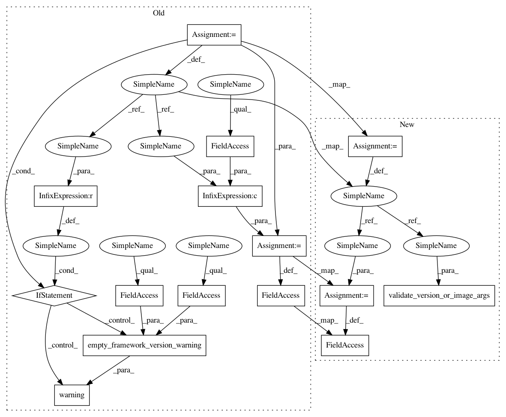

7919331b412d25e7a02a9447377dd4ee0c847c3a,src/sagemaker/pytorch/model.py,PyTorchModel,__init__,#PyTorchModel#Any#Any#Any#Any#Any#Any#Any#Any#,64
Before Change
python_deprecation_warning(self.__framework_name__, defaults.LATEST_PY2_VERSION)
)
if framework_version is None:
logger.warning(
empty_framework_version_warning(defaults.PYTORCH_VERSION, defaults.LATEST_VERSION)
)
self.py_version = py_version
self.framework_version = framework_version or defaults.PYTORCH_VERSION
self.model_server_workers = model_server_workers
def prepare_container_def(self, instance_type, accelerator_type=None):
Return a container definition with framework configuration set in
After Change
:class:`~sagemaker.model.FrameworkModel` and
:class:`~sagemaker.model.Model`.
validate_version_or_image_args(framework_version, py_version, image)
if py_version and py_version == "py2":
logger.warning(
python_deprecation_warning(self.__framework_name__, defaults.LATEST_PY2_VERSION)
)
self.framework_version = framework_version
self.py_version = py_version
super(PyTorchModel, self).__init__(
model_data, image, role, entry_point, predictor_cls=predictor_cls, **kwargs
In pattern: SUPERPATTERN
Frequency: 3
Non-data size: 15
Instances
Project Name: aws/sagemaker-python-sdk
Commit Name: 7919331b412d25e7a02a9447377dd4ee0c847c3a
Time: 2020-06-11
Author: 65414824+metrizable@users.noreply.github.com
File Name: src/sagemaker/pytorch/model.py
Class Name: PyTorchModel
Method Name: __init__
Project Name: aws/sagemaker-python-sdk
Commit Name: 09336f714a7adde5ce1acf345e57600e18a9868e
Time: 2020-06-10
Author: 65414824+metrizable@users.noreply.github.com
File Name: src/sagemaker/mxnet/model.py
Class Name: MXNetModel
Method Name: __init__
Project Name: aws/sagemaker-python-sdk
Commit Name: 66178b40d24e9a81dec8e7df63a6930a3ba8ff3a
Time: 2020-06-15
Author: 65414824+metrizable@users.noreply.github.com
File Name: src/sagemaker/chainer/model.py
Class Name: ChainerModel
Method Name: __init__
Project Name: aws/sagemaker-python-sdk
Commit Name: 7919331b412d25e7a02a9447377dd4ee0c847c3a
Time: 2020-06-11
Author: 65414824+metrizable@users.noreply.github.com
File Name: src/sagemaker/pytorch/model.py
Class Name: PyTorchModel
Method Name: __init__